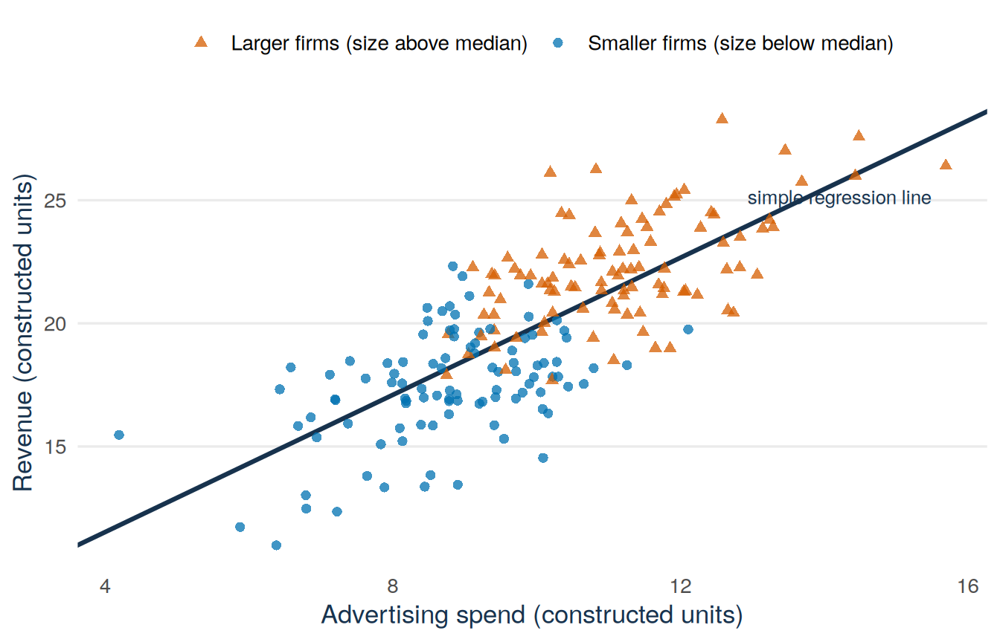
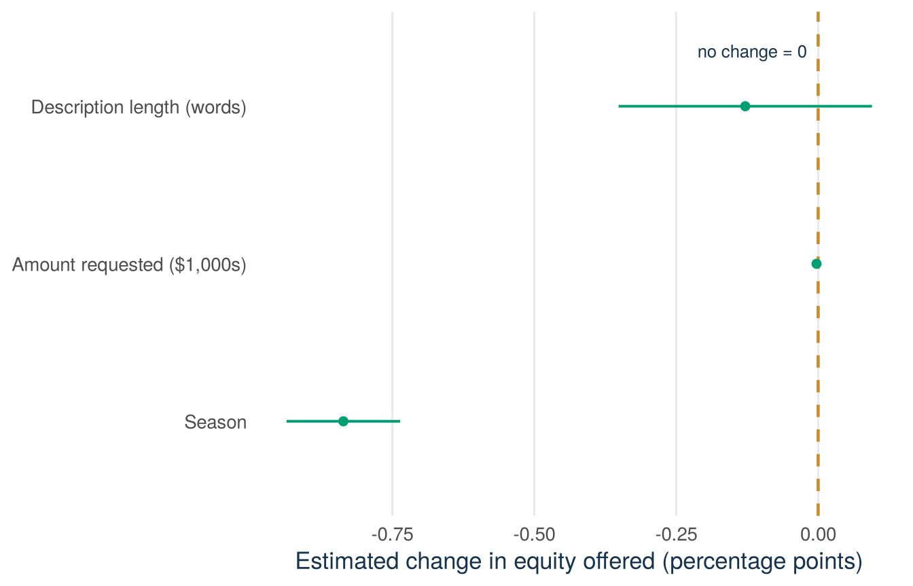

sharks <- read.csv("data/shark_tank_teaching.csv", stringsAsFactors = FALSE)
sharks$ask_1k <- sharks$ask_amount_usd / 1000
coef(lm(equity_offered_pct ~ season, data = sharks))
coef(lm(equity_offered_pct ~ season + ask_1k, data = sharks))Lecture 4: Multiple regression and what controls do
By the end of Lecture 4, you can
- state a multiple linear regression model
- interpret a coefficient while holding the other included predictors fixed
- explain, with an invented example, why the coefficients of a simple and a multiple regression can differ
- fit several models in R and compare them in one regression table
- scale a coefficient to a comparison a reader cares about
- say what a control variable can and cannot do.
Must know
Be able to do yourself:
- interpret a coefficient while holding the other included predictors fixed
- scale a coefficient to a step that matters, and add up several contributions
- explain why a coefficient changes when a predictor is added
- say what controls can and cannot do
- read a regression table with several models: the estimates, the standard errors in parentheses, and the stars (you practise this again in Tutorial 2).
Enough to recognise:
- the model written with \(k\) predictors
- the word collinearity.
Driving question
Two different explanations can produce the same pattern. Perhaps the equity offered (equity_offered_pct) in the Shark Tank file really fell over the seasons. Or perhaps later pitches simply ask for different amounts of money. Multiple regression separates two explanations like these.
Later seasons show smaller equity offers. Is the season the reason? Or is the requested amount the real reason, because later pitches also ask for different amounts?
Before class
Total preparation time: about 30 minutes.
Minimum path: the video and the R task. Full path: everything in this section.
Video preparation (15 minutes)
Watch Stanford Statistical Learning 3.3 Multiple Linear Regression. Focus on how one coefficient is interpreted when the other predictors are held fixed, and on why several predictors are included together. All links are also listed in the External Video Guide.
Predict (5 minutes). Answer this question before you come to class: once the requested amount is added, will the season coefficient move towards zero, away from zero, or barely move? Think about why the slope might change at all. If the requested amount is related to both the season and the equity offered, the simple slope mixes the two relationships. Choose one answer. You will find the answer in the lecture material.
R warm-up (10 minutes). Make the prediction above first, then run this code. In Lecture 3 you fitted the simple model of the equity offered (equity_offered_pct) on season and tested its slope. Fit it again. Then fit the model with two predictors, which adds the requested amount in thousands of dollars (ask_1k). Write down both season coefficients and bring them to class:
Code along (bring your laptop). Bring a charged laptop with RStudio and the course project open. All the code of the lecture is in this chapter, ready to copy. You can run each step yourself during the lecture and get the same numbers and figures.
If you are unsure how subscripts or equations with several variables work, review Mathematics Refresher: subscripts and indices.
Lecture material
The R task before class produced two season coefficients: about \(-0.824\) without the requested amount and about \(-0.814\) with it. This section explains what the second number means, why the two numbers can differ, and why they hardly differ here.
Start with a founder’s question
Your sales rose after you cut the price. But it was also December. Was it the lower price or the time of year? Founders often face this problem: two factors changed at the same time, and a simple comparison cannot separate them. The Shark Tank file has the same problem. The equity offered (equity_offered_pct) fell over the seasons, and the requested amounts also changed over the seasons. Multiple regression solves this problem by comparing pitches that asked for the same amount.
More than one predictor
Stanford explanation (review): 3.3 Multiple Linear Regression.
For predictors \(X_{i1},\ldots,X_{ik}\), the model is
\[ Y_i=\beta_0+\beta_1X_{i1}+\cdots+\beta_kX_{ik}+\varepsilon_i, \]
with conditional mean
\[ E[Y_i\mid X_{i1}=x_1,\ldots,X_{ik}=x_k] =\beta_0+\beta_1x_1+\cdots+\beta_kx_k. \]
Definition
Partial slope. The coefficient \(\beta_j\) of one predictor in a model with several predictors. It is the expected difference in \(Y\) that goes with a one-unit difference in \(X_j\), holding the other included predictors fixed.
Holding the other predictors fixed. The comparison is between cases that have the same values of all other predictors in the model and differ only in \(X_j\).
Write the phrase “holding the other included predictors fixed” in every interpretation of a slope from a multiple regression.
The model makes this comparison. The data do not need to contain two real pitches that are the same in every other respect. The model compares conditional means at fixed values of the included predictors.
Why coefficients change: an invented example
Start with an invented example. We build the data ourselves, so we know the true relationships. Imagine 200 small firms. One background variable, the size of the firm (size), influences both advertising spend (adspend) and revenue (revenue). Advertising itself adds nothing to revenue: the line of code that builds revenue contains size but not adspend.
set.seed(42)
n <- 200
size <- rnorm(n, mean = 10, sd = 2) # Z: firm size (drives both)
adspend <- 2 + 0.8 * size + rnorm(n, sd = 1) # X: bigger firms spend more
revenue <- 5 + 1.5 * size + rnorm(n, sd = 1.5) # Y: size drives revenue,
demo <- data.frame(revenue, adspend, size) # adspend does not
coef(lm(revenue ~ adspend, data = demo))(Intercept) adspend
5.957361 1.391909 coef(lm(revenue ~ adspend + size, data = demo))(Intercept) adspend size
5.0975426 0.1007622 1.3804961 The simple slope of adspend is about \(1.39\), clearly positive. Yet we know that advertising does nothing in these data. Once size is in the model, the slope of adspend falls to about \(0.10\), close to the zero that we built in. The simple slope counted the effect of differences in size as an effect of adspend. As a description the simple slope is correct: firms that advertise more do have higher revenue on average. As an answer to the question of what advertising does, it is wrong.
Definition
Omitted variable. A variable that is related to the outcome but is left out of the model.
Confounder. An omitted variable that is related to both a predictor and the outcome. The slope of that predictor then also picks up the relationship between the confounder and the outcome. This distortion is called omitted-variable bias. In the invented example, size is the confounder of adspend.
Figure 21.1 shows why. Larger firms (orange) are high on both axes. Smaller firms (blue) are low on both. If you move from left to right through the whole cloud of points, you move from small firms to large firms. So the simple slope compares different kinds of firms. Within each colour the points form a nearly flat cloud: at a given size, more advertising does not go with more revenue.
See the R code for this figure
library(ggplot2)
set.seed(42)
n <- 200
size <- rnorm(n, mean = 10, sd = 2) # Z: firm size (drives both)
adspend <- 2 + 0.8 * size + rnorm(n, sd = 1) # X: bigger firms spend more
revenue <- 5 + 1.5 * size + rnorm(n, sd = 1.5) # Y: size drives revenue,
demo <- data.frame(revenue, adspend, size) # adspend does not
demo$group <- ifelse(demo$size > median(demo$size),
"Larger firms (size above median)",
"Smaller firms (size below median)")
simple_fit <- lm(revenue ~ adspend, data = demo)
ggplot(demo, aes(x = adspend, y = revenue,
colour = group, shape = group)) +
geom_abline(intercept = coef(simple_fit)[1],
slope = coef(simple_fit)[2],
colour = "#17324D", linewidth = 1.1) +
geom_point(alpha = 0.75, size = 2) +
annotate("text", x = max(demo$adspend) - 0.2,
y = coef(simple_fit)[1] + coef(simple_fit)[2] *
(max(demo$adspend) - 0.2) - 2.4,
label = "simple regression line",
hjust = 1, colour = "#17324D", size = 3.4) +
scale_colour_manual(values = c(
"Larger firms (size above median)" = "#D55E00",
"Smaller firms (size below median)" = "#0072B2"
)) +
scale_shape_manual(values = c(
"Larger firms (size above median)" = 17,
"Smaller firms (size below median)" = 16
)) +
labs(x = "Advertising spend (invented units)",
y = "Revenue (invented units)",
colour = NULL, shape = NULL) +
theme_minimal(base_size = 13) +
theme(
panel.grid.minor = element_blank(),
panel.grid.major.x = element_blank(),
plot.caption = element_text(colour = "#5B6976"),
axis.title = element_text(colour = "#17324D"),
legend.position = "top"
)
A coefficient changes when the added predictor explains differences that the simple slope had picked up. This is why the phrase “holding the other included predictors fixed” matters: it says which comparison the estimate makes.
The real-data contrast: the season slope barely moves
Now make the same comparison on the Shark Tank data. From here on, money is measured in thousands of dollars: ask_1k is the requested amount divided by 1,000. One unit is $1,000 and 100 units are $100,000. Lecture 1 showed how a coefficient changes when the unit changes.
sharks <- read.csv("data/shark_tank_teaching.csv", stringsAsFactors = FALSE)
sharks$ask_1k <- sharks$ask_amount_usd / 1000
m_simple <- lm(equity_offered_pct ~ season, data = sharks)
m_adjusted <- lm(equity_offered_pct ~ season + ask_1k, data = sharks)
c(
simple = coef(m_simple)["season"],
adjusted_for_ask = coef(m_adjusted)["season"]
) simple.season adjusted_for_ask.season
-0.8241241 -0.8143307 The season slope moves from about \(-0.824\) to about \(-0.814\). That is a change of 0.01 percentage points per season, about 1% of the slope. This answers the prediction question from before class: the coefficient barely moves. In the invented example, adding size removed almost the whole simple slope. Here, adding the requested amount leaves the season trend almost unchanged. In these data, the season trend does not come from differences in the requested amount.
The stable slope tells you something useful: the requested amount does not explain the season trend. It does not rule out every other explanation. A variable that is not in the file, such as the maturity of the venture or the experience of the founder, could still play the role that size played in the invented data. A stable slope tells you about the variables you added. It tells you nothing about variables that are not in the file.
A three-predictor Shark Tank model
Now add a third predictor. The outcome is the equity that the founders offered at the start of the pitch (equity_offered_pct), in percent. The predictors are:
season: the season number, 1 to 16ask_1k: the requested amount in thousands of dollarsdescription_words: the number of words in the short description of the business in the data source.
equity_model <- lm(
equity_offered_pct ~ season + ask_1k + description_words,
data = sharks
)
summary(equity_model)
Call:
lm(formula = equity_offered_pct ~ season + ask_1k + description_words,
data = sharks)
Residuals:
Min 1Q Median 3Q Max
-15.295 -4.776 -1.283 3.288 82.106
Coefficients:
Estimate Std. Error t value Pr(>|t|)
(Intercept) 22.0249310 0.8878522 24.807 < 2e-16 ***
season -0.8361515 0.0509825 -16.401 < 2e-16 ***
ask_1k -0.0028975 0.0005771 -5.021 5.79e-07 ***
description_words -0.1283379 0.1137527 -1.128 0.259
---
Signif. codes: 0 '***' 0.001 '**' 0.01 '*' 0.05 '.' 0.1 ' ' 1
Residual standard error: 7.619 on 1437 degrees of freedom
Multiple R-squared: 0.1876, Adjusted R-squared: 0.1859
F-statistic: 110.6 on 3 and 1437 DF, p-value: < 2.2e-16The fitted equation is approximately
\[ \widehat{\text{equity}} =22.025-0.836\,\text{season}-0.0029\,\text{ask\_1k} -0.128\,\text{description\_words}. \]
The coefficient-interpretation protocol
Use the same five checks every time you interpret a slope:
- Estimate and direction: state the fitted change and its sign.
- Predictor step and unit: say what a one-unit increase means.
- Outcome unit: state the unit in which the outcome changes.
- Conditioning: name the other included predictors that are held fixed.
- Scope: name the analysed records and write “associated with”, unless the data come from an experiment that justifies a causal claim.
The three predictors have different units:
| Term | A one-unit increase means | Coefficient unit |
|---|---|---|
season |
one later season | equity percentage points per season |
ask_1k |
$1,000 more requested | equity percentage points per $1,000 |
description_words |
one additional word | equity percentage points per word |
Apply the five checks to each slope in turn. All three sentences are about the 1,441 recorded pitches:
- Season. At the same requested amount and description length, one later season is associated with about \(0.836\) percentage points less equity offered.
- Requested amount. At the same season and description length, an additional $1,000 requested is associated with about \(0.0029\) percentage points less equity offered. The number is tiny because the unit step is tiny. Per additional $100,000 the association is about \(0.29\) percentage points. The t statistic (about \(-5.0\)) does not depend on the unit.
- Description length. At the same season and requested amount, one additional description word is associated with about \(0.128\) percentage points less equity offered. This estimate is not statistically distinguishable from zero at 5% (p \(\approx\) 0.26). Report the estimate anyway. “Not significant” does not mean “exactly zero”. It means that the data are consistent with a range of values that includes zero.
Check: the season slope was −0.814 with two predictors and −0.836 with three. Contradiction?
No. The two coefficients answer different questions. \(-0.814\) holds only ask_1k fixed. \(-0.836\) holds ask_1k and description_words fixed. Adding a predictor changes what is held fixed, so the coefficient may change. Here the change is small, as it was when ask_1k was added.
Three models in one table
This lecture has now fitted three models of the equity offered (equity_offered_pct): season alone (m_simple), season and requested amount (m_adjusted), and the three-predictor model (equity_model). Research papers show such models side by side in one table, with one column per model. The table needs the standard error of every coefficient and the fit of every model. summary() prints these numbers for the first two models below. The output for the third model is in the previous section.
summary(m_simple)
Call:
lm(formula = equity_offered_pct ~ season, data = sharks)
Residuals:
Min 1Q Median 3Q Max
-14.984 -4.743 -1.364 3.664 82.840
Coefficients:
Estimate Std. Error t value Pr(>|t|)
(Intercept) 20.45659 0.46443 44.05 <2e-16 ***
season -0.82412 0.04752 -17.34 <2e-16 ***
---
Signif. codes: 0 '***' 0.001 '**' 0.01 '*' 0.05 '.' 0.1 ' ' 1
Residual standard error: 7.683 on 1439 degrees of freedom
Multiple R-squared: 0.1729, Adjusted R-squared: 0.1723
F-statistic: 300.7 on 1 and 1439 DF, p-value: < 2.2e-16summary(m_adjusted)
Call:
lm(formula = equity_offered_pct ~ season + ask_1k, data = sharks)
Residuals:
Min 1Q Median 3Q Max
-15.167 -4.796 -1.126 3.246 82.216
Coefficients:
Estimate Std. Error t value Pr(>|t|)
(Intercept) 21.1846025 0.4832781 43.84 < 2e-16 ***
season -0.8143307 0.0471759 -17.26 < 2e-16 ***
ask_1k -0.0028717 0.0005767 -4.98 7.14e-07 ***
---
Signif. codes: 0 '***' 0.001 '**' 0.01 '*' 0.05 '.' 0.1 ' ' 1
Residual standard error: 7.62 on 1438 degrees of freedom
Multiple R-squared: 0.1869, Adjusted R-squared: 0.1858
F-statistic: 165.3 on 2 and 1438 DF, p-value: < 2.2e-16The table below collects the numbers of the three outputs above.
| (1) | (2) | (3) | |
|---|---|---|---|
| Season | −0.824*** | −0.814*** | −0.836*** |
| (0.048) | (0.047) | (0.051) | |
| Amount requested ($1,000s) | −0.0029*** | −0.0029*** | |
| (0.0006) | (0.0006) | ||
| Description length (words) | −0.128 | ||
| (0.114) | |||
| Intercept | 20.457*** | 21.185*** | 22.025*** |
| (0.464) | (0.483) | (0.888) | |
| Observations | 1,441 | 1,441 | 1,441 |
| \(R^2\) | 0.173 | 0.187 | 0.188 |
| Adjusted \(R^2\) | 0.172 | 0.186 | 0.186 |
Outcome: equity offered (%). Ordinary least squares. Standard errors in parentheses. All three columns use the same 1,441 pitches. * p < 0.05, ** p < 0.01, *** p < 0.001.
Each column is one model and each row is one predictor. An empty space means that the predictor is not in that model. The number in parentheses under a coefficient is its standard error, and the stars show the p-value of the two-sided test of that coefficient against zero. Read along a row to see how a coefficient changes when predictors are added: the season coefficient stays between \(-0.836\) and \(-0.814\) in all three columns. Read down a column to see one model: column (3) is equity_model. The bottom rows give the number of observations and the fit of each model. This is the layout to use for regression results in your thesis.
The last two rows need one more term, which Lecture 3 introduced.
Definition
Adjusted \(R^2\). \(R^2\) with a small penalty for every predictor in the model. \(R^2\) never falls when a predictor is added. Adjusted \(R^2\) can fall when the new predictor adds almost nothing. Use adjusted \(R^2\) to compare models with different numbers of predictors.
The formula is on the code sheet. In the table, adding the requested amount raises \(R^2\) from 0.173 to 0.187. The model then accounts for 18.7% of the variation in the equity offered, up from 17.3%. Adjusted \(R^2\) rises with it, from 0.172 to 0.186. Adding the description length leaves adjusted \(R^2\) at 0.186: this predictor adds almost nothing to the fit.
R can build such a table for you with the package modelsummary:
library(modelsummary)
modelsummary(
list("(1)" = m_simple, "(2)" = m_adjusted, "(3)" = equity_model),
stars = c("*" = 0.05, "**" = 0.01, "***" = 0.001),
gof_map = c("nobs", "r.squared", "adj.r.squared")
)You need to install the package once with install.packages("modelsummary"). It rounds to three decimals, so in its table the coefficient of the requested amount appears as −0.003.
Scaling to comparisons readers care about
A reader rarely cares about one season or one thousand dollars. Scale the coefficient to a step that matters to the reader: fitted change = coefficient × number of unit steps, holding the other included predictors fixed.
Example 21.1 (Worked example: five seasons, half a million dollars, ten words) Holding the other included predictors fixed in equity_model:
- Five later seasons: \(5\times(-0.836)=-4.18\) fitted equity percentage points.
- $500,000 more requested: \(500{,}000/1{,}000 = 500\) units of
ask_1k, so \(500\times(-0.0029)=-1.45\) fitted percentage points. - Ten additional description words: \(10\times(-0.128)=-1.28\) fitted percentage points. This coefficient is not significantly different from zero, so the scaled version is not either.
Changing the unit of a predictor changes the coefficient and its standard error by the same factor. It does not change the fitted values, the t statistic, or the relationship itself. A coefficient “per dollar” of \(-0.0000029\) would be correct but hard to read. Per $1,000 is readable. Per $100,000 is often the best unit for a sentence.
Try it: three seasons later and $200,000 more
Try this with your neighbour first. Two pitches have the same description length. One is three seasons later and requests $200,000 more. Complete the steps before opening the answer.
Step 1 (given). Three seasons contribute \(3\times(-0.836)\) fitted percentage points.
Step 2 (you). Convert $200,000 into ask_1k units and multiply by the ask_1k coefficient.
Step 3 (you). Add the two contributions. This is allowed because the model is additive: each predictor has its own term, and the terms are added up. State the combined fitted difference in one sentence that passes the five checks.
Check your answer
\(200{,}000/1{,}000=200\) units, so the request contributes \(200\times(-0.0029)\approx-0.58\). Combined: \(3(-0.836)+200(-0.0029)\approx-2.51-0.58=-3.09\) percentage points. Sentence: among the recorded pitches, a pitch three seasons later that requests $200,000 more is fitted to offer about 3.1 percentage points less equity, holding description length fixed.
b <- coef(equity_model)
3 * b["season"] + 200 * b["ask_1k"] season
-3.087963 What controls can and cannot do
Including a control can:
- make a comparison fairer, because the compared cases are alike on the measured variables
- reduce the residual variation, which makes confidence intervals narrower
- show that a simple association partly came from comparing different kinds of cases.
A control also has a cost: it makes a coefficient less precise when the predictors are strongly correlated.
Including a control cannot:
- adjust for variables that were not measured
- fix reverse causality, where the outcome influences the predictor
- repair selection, where the cases in the file are not typical of the cases you want to talk about
- remove errors in how a variable was measured.
A control variable is simply a predictor that is included in the model. The word “control” does not make any coefficient causal. Only the way the data were produced can make a coefficient causal, for example when the data come from an experiment.
Check: which of these four problems does adding
ask_1k address?
(a) Later pitches request different amounts. (b) The experience of the founder is not recorded. (c) The equity offered may influence how much is asked. (d) Only pitches that were broadcast are in the file.
Only (a). The requested amount is measured, and holding ask_1k fixed removes it from the season comparison. Problem (b) is an unmeasured confounder, (c) is reverse causality, and (d) is selection. Adding a measured control does not solve any of these three.
Assumptions extend to the full predictor set
For multiple regression, the Lecture 2 assumption list applies to the whole set of included predictors:
- The conditional mean is linear in the included terms.
- For a causal reading only: nothing outside the model drives both an included predictor and the outcome (no confounding).
- The observations are independent.
- No predictor can be calculated exactly from the others, for example as the sum of two of them.
- The usual standard errors require a constant conditional error variance.
- In small samples, exact t and F inference also requires normally distributed errors.
A high correlation among the predictors is called collinearity. It does not bias the coefficients. It makes the single coefficients imprecise and unstable, because the data contain little information to separate predictors that move together. It is worse when one predictor can be calculated exactly from the others. R then cannot estimate all coefficients and leaves one term out. Collinearity makes the estimates less precise. With exact dependence, one coefficient cannot be estimated at all.
A coefficient plot keeps units visible
Figure 21.2 shows the three slope estimates of equity_model with their 95% confidence intervals.
See the R code for this figure
library(ggplot2)
sharks <- read.csv("data/shark_tank_teaching.csv", stringsAsFactors = FALSE)
sharks$ask_1k <- sharks$ask_amount_usd / 1000
equity_model <- lm(
equity_offered_pct ~ season + ask_1k + description_words,
data = sharks
)
ci <- confint(equity_model)[-1, , drop = FALSE]
term_labels <- c("Season", "Amount requested ($1,000s)",
"Description length (words)")
coef_df <- data.frame(
term = factor(term_labels, levels = term_labels),
estimate = coef(equity_model)[-1],
lower = ci[, 1],
upper = ci[, 2]
)
ggplot(coef_df, aes(x = estimate, y = term)) +
geom_vline(xintercept = 0, colour = "#C98B2E",
linetype = "dashed", linewidth = 0.8) +
geom_pointrange(aes(xmin = lower, xmax = upper),
colour = "#009E73", linewidth = 0.7, fatten = 2.6) +
annotate("text", x = -0.02, y = 3.35, label = "no change = 0",
hjust = 1, colour = "#17324D", size = 3.4) +
labs(x = "Estimated change in equity offered (percentage points)",
y = NULL) +
theme_minimal(base_size = 13) +
theme(
panel.grid.minor = element_blank(),
panel.grid.major.y = element_blank(),
plot.caption = element_text(colour = "#5B6976"),
axis.title = element_text(colour = "#17324D")
)
Read Figure 21.2 with the five steps for reading a figure:
- Unit and variables: the rows are the predictors. The horizontal axis is the estimated change in the equity offered, in percentage points.
- Scales: each estimate is per one unit of its own predictor: per season, per $1,000, per word. The rows are not on a common scale.
- One element: a dot is a coefficient estimate, and its horizontal line is the 95% confidence interval. The dashed line marks zero.
- Pattern: the season interval lies clearly left of zero. The interval for the description length crosses zero. The
ask_1krow lies almost on the zero line only because its unit step ($1,000) is tiny: its t statistic is about \(-5\). The distance from zero in this plot depends on the unit. It does not show how strong the evidence is. - Limits: the intervals show sampling uncertainty under the model, among these recorded pitches.
What an adjusted coefficient can and cannot say
- “Holding fixed” covers only the predictors in the model. The maturity of the venture, its revenue, and the experience of the founder are not held fixed.
- If a coefficient stays stable across models, the measured controls do not explain it. This proves nothing about variables that were not measured.
- The equity offered is the opening offer in the pitch, not a completed investment.
What you can do with it: add the controls that a critic would name first. If your coefficient stays about the same after you add them, you can act on it for cheap decisions. For expensive decisions, test it first.
Answering the driving question
At the same requested amount and description length, the season trend remains: about \(-0.836\) equity percentage points per season, against \(-0.824\) without the two controls. The requested amount does not explain the season trend. Later pitches offer less equity even when they are compared at the same requested amount.
A founder’s decision (invented example)
Suppose you run a campus venture that sells meal boxes. In weeks with lower prices you get more orders: the simple slope is 60 more orders per euro of price cut. But you lowered prices mainly in exam weeks, when demand is high anyway. With exam weeks included in the model as a control, the slope is 25 orders per euro. You sell about 150 meal boxes a week at a margin of 4 euros per box. A price cut of 1 euro costs 150 euros of margin on the boxes that you would sell anyway. After the cut, each extra order earns a margin of 3 euros. With the simple slope, the cut would bring 60 more orders at 3 euros each, so 180 euros, and the cut would be profitable. With the adjusted slope, the cut brings 25 orders, so 75 euros, which is less than the 150 euros that the cut costs. The decision: keep the price. The control changed the decision.
Next: You can now hold other predictors fixed, as long as they are numbers. Many business comparisons are between categories: sales channels, customer segments, kinds of teams. Lecture 5 shows how categories enter a regression and how to test a whole set of category terms at once.
After class
Total practice time: about 85 minutes.
Minimum path (about 35 minutes): read the lecture material, answer the recall questions, then work for 10 minutes on the tasks that follow. Full path: all tasks below.
Read the lecture material (15 minutes)
Read the Lecture material section above from start to end. The lecture covered the main ideas. The text has every step, every example, and all the code, including parts that were not shown in class. Note what is still unclear and bring it to the next tutorial, or ask Tilly, the course AI assistant.
Recall questions (10 minutes)
- Which phrase belongs in every interpretation of a slope from a multiple regression?
- Why can a coefficient change after another predictor is added?
- What does the no-confounding condition say, and when is it needed?
- Why does adding controls not make a coefficient causal?
- What problem can strongly correlated predictors create?
- Which five elements belong in the interpretation of a slope?
Check your answers
- “Holding the other included predictors fixed.”
- The simple slope also picks up the relationship between the outcome and an omitted variable that is related to the predictor. When that variable is added, the slope no longer includes this part.
- Nothing outside the model drives both an included predictor and the outcome. It is needed only when a coefficient is read as the effect of changing that predictor.
- Unmeasured confounders, selection, reverse causality, and measurement error can all remain after a control is added.
- Imprecise and unstable estimates of the single coefficients. With an exact dependence R cannot estimate all coefficients and leaves one term out.
- Estimate and direction, predictor step and unit, outcome unit, the predictors that are held fixed, and the scope (which records, association or effect).
Finish a half-worked example: interpret the three slopes (10 minutes)
Interpret the three slopes of equity_model with units and with the predictors that are held fixed.
Step 1 (given). Season: holding the requested amount and the description length fixed, among the recorded pitches, one later season is associated with about 0.836 percentage points less equity offered.
Step 2 (you). Write the same kind of sentence for ask_1k and for description_words.
Check your answer
Holding the season and the description length fixed, an additional $1,000 requested is associated with about 0.0029 percentage points less equity offered (0.29 per $100,000). Holding the season and the requested amount fixed, one additional description word is associated with about 0.128 percentage points less.
Practice (20 minutes)
Items 5 to 7 use the calculations of Example 21.1. Item 8 is the Try it task, now done from start to finish.
- Calculate 95% confidence intervals with
confint(equity_model). - Test each coefficient against zero. Explain how these three single tests differ from the one overall F-test of the model.
- Remove
description_words. Compare the coefficients of season and requested amount with those of the full model. - Name one plausible omitted variable and explain which interpretation of the coefficients it would make questionable.
- Interpret a difference of five seasons with the fitted season coefficient.
- Interpret a difference of $500,000 in the requested amount.
- Interpret a difference of ten words in description length and use the 95% interval to judge \(H_0:\beta=0\).
- Compare two fitted pitches that are the same except that one is three seasons later and requests $200,000 more. Calculate the combined fitted difference.
Check your answers
- The season interval is approximately \((-0.936, -0.736)\), the
ask_1kinterval \((-0.0040, -0.0018)\), and the description interval \((-0.351, 0.095)\). - Each t-test evaluates one \(\beta_j=0\) at a time. The overall F-test (F \(\approx\) 110.6 on 3 and 1437 df) evaluates all three slope coefficients together.
- Without
description_words, the season coefficient is about \(-0.814\) and theask_1kcoefficient about \(-0.0029\). These are the numbers in column (2) of the table in the lecture material. Compare them with column (3). The coefficients change only slightly. - Examples are the maturity of the venture, its revenue, the experience of the founder, or decisions of the producers about what is broadcast. If such a variable is related to both an included predictor and the equity offered, it is a confounder. The coefficient is then still a correct description, but it is not the effect of the predictor.
- Holding requested amount and description length fixed, a pitch five seasons later is fitted to offer about \(5(-0.836)=-4.18\) equity percentage points less.
- $500,000 equals 500 units of
ask_1k. Holding season and description length fixed, the fitted difference is \(500\times(-0.0029)\approx-1.45\) percentage points. - Ten words go with about \(-1.28\) fitted percentage points, holding season and requested amount fixed. Multiplying the interval by 10 gives approximately \((-3.51, 0.95)\). The interval contains zero, so the two-sided 5% test does not reject a zero coefficient.
- The fitted difference is \(3(-0.836)+200(-0.0029)\approx-3.09\) percentage points, holding description length fixed. The two contributions add because the model is additive.
Practice: all steps together (10 minutes)
Write one paragraph that connects the diagnostics of Lecture 2 to equity_model. Which residual checks would you run on this three-predictor model? What would each check look for? What would you do about a highly influential pitch if you found one?
Check a model answer
A plot of residuals against fitted values checks that the conditional mean is roughly linear in the included terms and that the spread is roughly constant. A curve would suggest that assumption 1 fails. A funnel shape would suggest that the usual standard errors are wrong. Standardised residuals (rstandard) flag pitches that the model fits unusually badly. Cook’s distance flags pitches that move the coefficients on their own. Investigate a flagged pitch, for example one with an extreme requested amount, but do not delete it. Check the recorded values, fit the model with and without it, and report both fits if they disagree. Never delete an observation without reporting it.
Review: one question from Lecture 3 (5 minutes)
For the simple model equity_offered_pct ~ season, the slope’s t statistic is about \(-17.34\). What is the overall F statistic of this one-predictor model, and why?
Check your answer
\(F = t^2 \approx 300.7\). With a single slope, the overall F-test and the two-sided t-test of that slope test the same hypothesis, and F is exactly the square of t. With several predictors this is no longer true. So Lecture 5 introduces a test of several coefficients at once.
Worked exam interpretation (5 minutes)
Exam-style question. A summary table reports, for the three-predictor model, season -0.836 (SE 0.051) and description_words -0.128 (SE 0.114). A student writes: “Season matters and word count does not, so descriptions have no effect on equity.” Give two corrections.
Check a model answer
First, “no effect” is a wrong reading of a result that is not significant. The interval \((-0.351, 0.095)\) contains zero and also values near \(-0.35\). The data are consistent with no association and also with a small negative one. Not significant does not mean zero. Second, “effect” claims causation. Both estimates are associations among the recorded pitches, holding the other included predictors fixed. The data do not come from an experiment, so they do not show a causal effect.
Check the AI (5 minutes)
You asked an AI assistant: “I added the requested amount as a control. Is the season coefficient of -0.81 now the effect of time?” It answered:
“Yes. Because you controlled for the requested amount, one later season now causes 0.81 percentage points less equity.”
Find what is wrong and write the corrected answer. This is the Verify step of Attempt → Ask → Verify → Explain, and the exam asks for it.
Check your answer
A control only holds fixed what was measured and included. Venture maturity, founder experience, and the choices of the producers are not in the model. The correct sentence: at the same requested amount, one later season is associated with about 0.81 percentage points less equity offered.
Make it yours (5 minutes)
Two sentences about your own venture
Think of your EiA3 venture, or any business you know well. Name one outcome you care about and two factors that influence it and are correlated with each other (for example price and quality tier, or marketing spend and firm age). Then write two sentences. What would a regression of the outcome on only one of the two factors mix together? What would “holding the other factor fixed” let you see? There is no wrong answer.
See an example, then write your own
Take a student-run venture that sells meal-prep boxes on campus. “Outcome: weekly orders. Factors: price and quality tier, which move together because premium boxes cost more. A regression of orders on price alone would mix cheaper boxes with lower-tier boxes. Holding the tier fixed shows what a price cut does within a tier, and that is the number I can act on.”
You can discuss this task, and any other task in this chapter, with Tilly, the course AI assistant. Ask it to propose an omitted variable for the regression of your venture, and to ask you whether a measured control could fix it.
Continue to Lecture 5: Categories as predictors and joint tests.
Code sheet: Lecture 4 commands and formulas.
For a more formal treatment, see James et al., An Introduction to Statistical Learning, 2nd ed., Sections 3.2 and 3.3.3, and Nieuwenhuis, Statistical Methods for Business and Economics, Chapter 20.